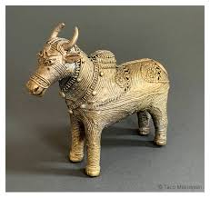
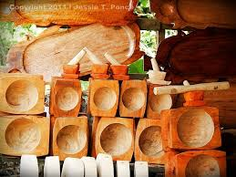
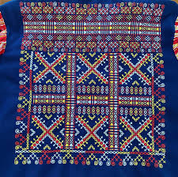
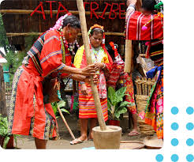

Davao del Sur is a province rich in artistic heritage, where traditional craftsmanship continues to thrive alongside modern creativity. Deeply influenced by its indigenous communities—particularly the Bagobo-Tagabawa, Bagobo-Obo, Matigsalug, and B’laan—the arts and crafts of the region reflect a strong connection to culture, spirituality, and the natural environment. These creative expressions are not only decorative but also serve functional, ceremonial, and symbolic purposes in daily life.
Traditional weaving in Davao del Sur is anchored in the rich cultural heritage of indigenous groups like the Bagobo (Tagabawa) and Blaan, who are renowned for weaving inabal (abaca cloth) using back-strap looms. Centered in Bansalan, this art features intricate, nature-inspired designs—like the binuwaya (crocodile)—colored with natural dyes, often produced by "dream weavers".

In Davao del Sur, beadwork and jewelry making are deeply rooted in the traditions of indigenous groups like the Bagobo Tagabawa and B’laan, who use intricate beading to denote social status and spiritual connection. Today, this heritage blends with a growing contemporary scene featuring modern jewelry designers and interactive craft workshops in Davao City.

In Davao del Sur, brass casting and metal crafts are deeply rooted in the heritage of the Bagobo Tagabawa tribe, who are renowned for their intricate "lost-wax" metalwork. This traditional art, often centered around the foothills of Mount Apo, produces iconic items such as jingling brass bells and ornate weaponry.

Wood carving in Davao del Sur is a vibrant local industry, particularly in Santa Cruz, where craftsmen specialize in turning jackfruit tree trunks (jackwood) into durable furniture and functional kitchenware. These handcrafted items, including mortars, pestles, and decorative figures, are commonly sold at roadside stalls in the province, offering a distinct blend of utility and artistry.

In Davao del Sur, embroidery and textile decoration span from the intricate, centuries-old traditions of indigenous communities to modern, high-volume computerized services for businesses.

Davao del Sur's culture is a rich tapestry woven from indigenous traditions, primarily the Bagobo-Tagabawa, Blaan, and Sama, characterized by intricate weaving, beadwork, and deep spiritual connections to Mt. Apo. Key highlights include the annual Kadayawan Festival, traditional craft centers, and cultural preservation efforts in communities like Sta. Cruz and Bansalan.

Tourism in Davao del Sur is currently defined by a "peace and progress" narrative. Modern influence is most visible through infrastructure expansion, digitalization of services, and a strategic pivot toward high-value tourism sectors like MICE (Meetings, Incentives, Conferences, and Exhibitions).